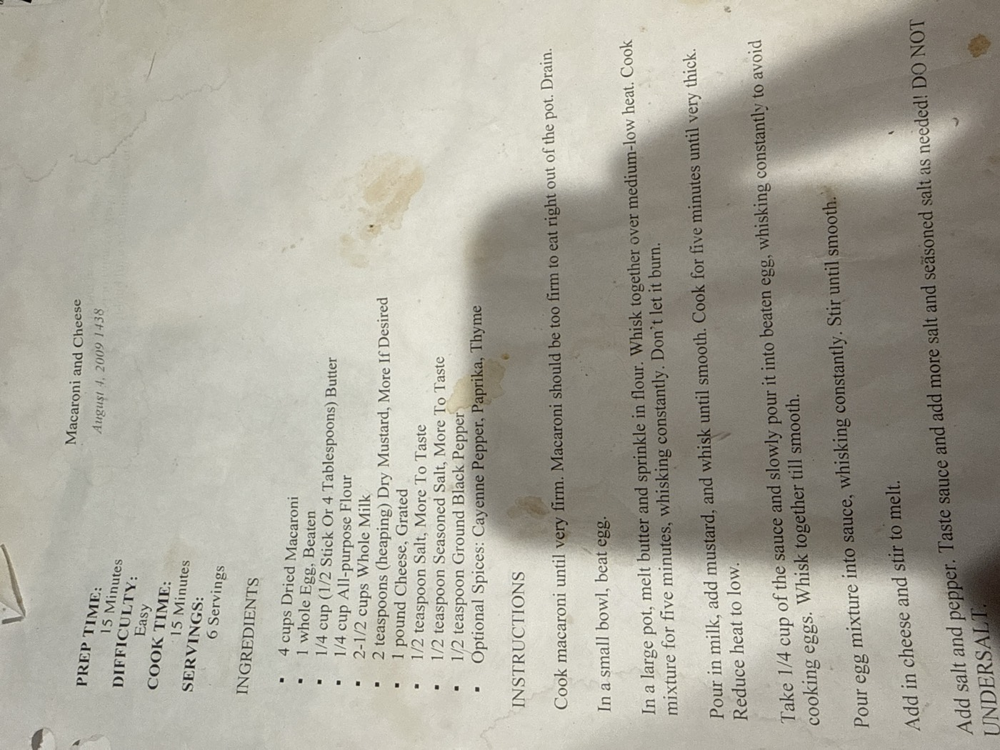

Macaroni and Cheese

A classic stovetop mornay-style mac and cheese: a butter-and-flour roux, milk, a heaping dose of dry mustard, and a pound of grated cheese, tempered with egg for richness. The card's instructions end with a firm, all-caps reminder not to skimp on the salt.
6servings
15 minprep time
15 mincook time
Vegetariandiet
Ingredients
- 4 cups dried macaroni
- 1 whole egg, beaten
- ¼ cup (½ stick, or 4 tbsp) butter
- ¼ cup all-purpose flour
- 2½ cups whole milk
- 2 tsp (heaping) dry mustard, more if desired
- 1 lb cheese, grated
- ½ tsp salt, more to taste
- ½ tsp seasoned salt, more to taste
- ½ tsp ground black pepper
- Optional spices: cayenne pepper, paprika, thyme
Method
- Cook the macaroni. Cook the macaroni until very firm — it should be too firm to eat right out of the pot. Drain.
- Beat the egg. In a small bowl, beat the egg.
- Make the roux. In a large pot, melt the butter and sprinkle in the flour. Whisk together over medium-low heat. Cook for five minutes, whisking constantly — don't let it burn.
- Add milk and mustard. Pour in the milk, add the mustard, and whisk until smooth. Cook for five minutes until very thick.
- Temper the egg. Reduce heat to low. Take ¼ cup of the sauce and slowly pour it into the beaten egg, whisking constantly to avoid cooking the egg.
- Combine. Pour the egg mixture into the sauce, whisking constantly. Stir until smooth.
- Add cheese. Add in the cheese and stir to melt.
- Season and finish. Add salt and pepper. Taste the sauce and add more salt and seasoned salt as needed — do not undersalt. Fold in the drained macaroni and serve.
DO NOT UNDERSALT — the card's own emphasis, in caps, at the very end.
Scan note: the card doesn't explicitly say to fold the macaroni into the finished sauce — that's added above for completeness, since the ingredient list opens with the pasta and the dish obviously needs it combined.